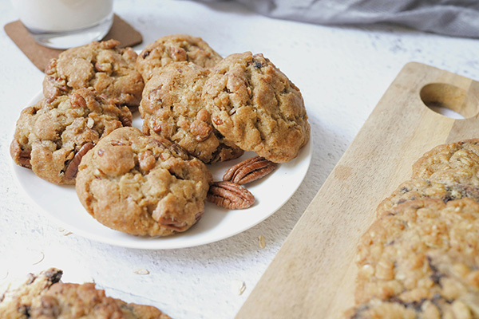
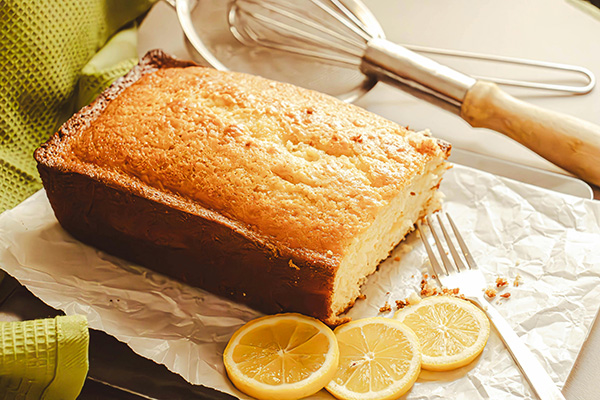
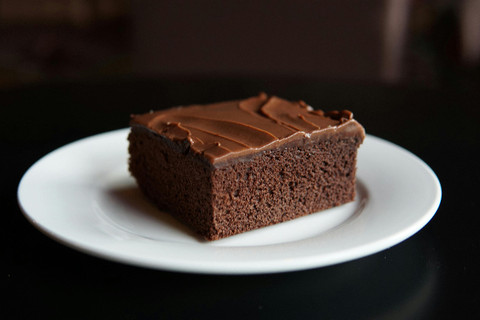
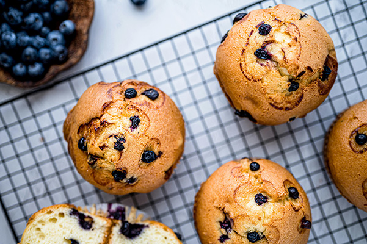

Skip to main content
My Everyday Recipes
About Me
My Recipes
Recipes
Oatmeal Cookies
Lemon Pound Cake
Chocolate Cake
Healthy Muffin
Greek Yogurt
Recipes Gallery
Filter by Category: All
Cookies
Cakes
Muffins
Other

Healthy Oatmeal Cookies

Lemon Pound Cake

Chocolate Cake

Healthy Muffin
Greek Yogurt Bowl